" El euro representa la respuesta europea para conseguir el objetivo de un mayor nivel de empleo y bienestar de nuestros ciudadanos . El euro es la mejor base para crear empleo " , insistió.
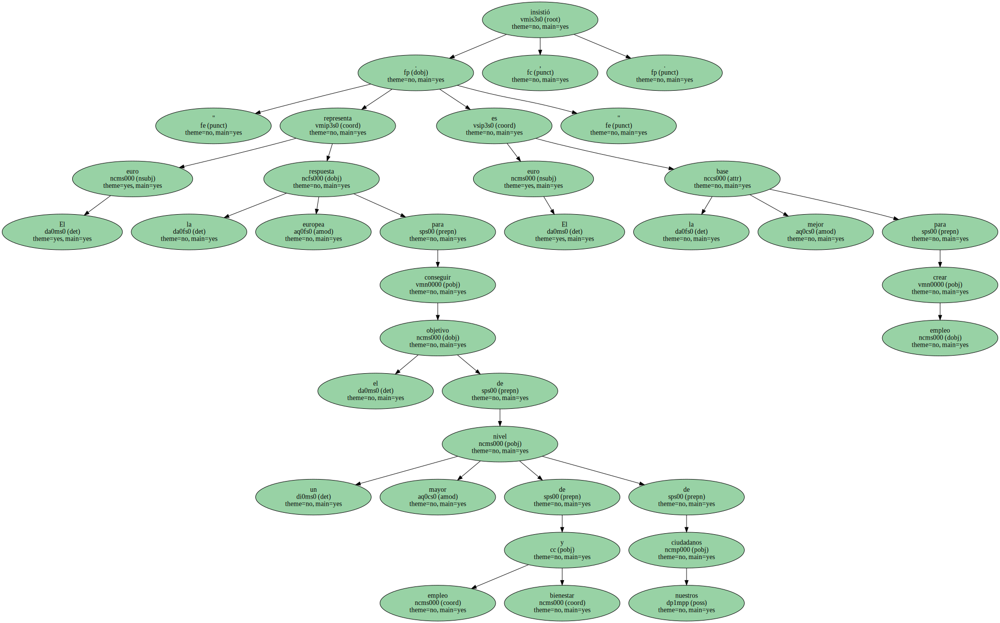Rato aprovechó la reunión para entregar a la Comisión Europea el programa de estabilidad español , que incluye el objetivo de eliminar totalmente el déficit público en el 2002 y situar el nivel de renta español en el 85% de la media comunitaria.
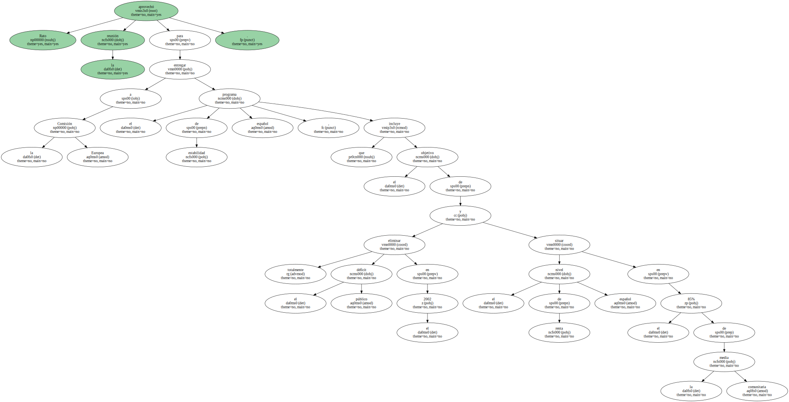Ayer mismo , en el primer día del euro , Rato destacó las capacidades de la moneda única europea como instrumento para avanzar en la solución de problemas " como es el empleo , la calidad de vida , la calidad de los servicios públicos , la sanidad , las pensiones y , en definitiva , la prosperidad de los españoles " , dijo.
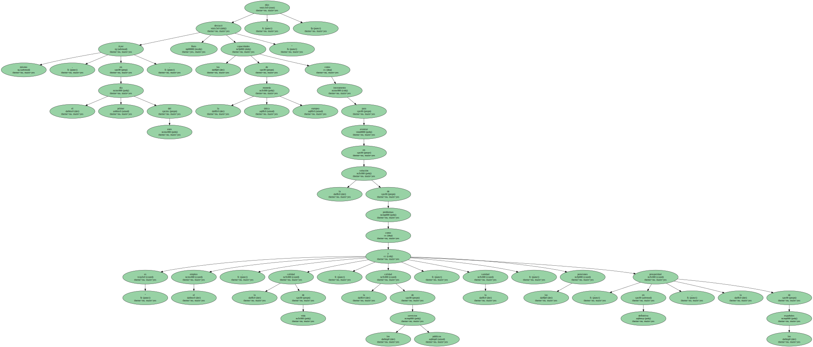En su última actuación como presidente del Consejo de Economía , el ministro austriaco , Rudolf Edlinger , resaltó el jueves que " el momento es idóneo para la introducción del euro " , con un crecimiento sostenido , las cuentas públicas saneadas y una inflación muy baja.
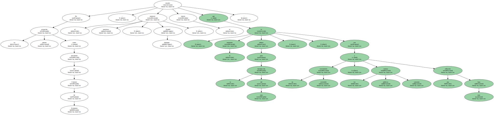El euro , incluso antes de ser creado , protegió a la UE durante el año pasado de la grave crisis financiera internacional y la convirtió en un polo de estabilidad , señaló Edlinger.
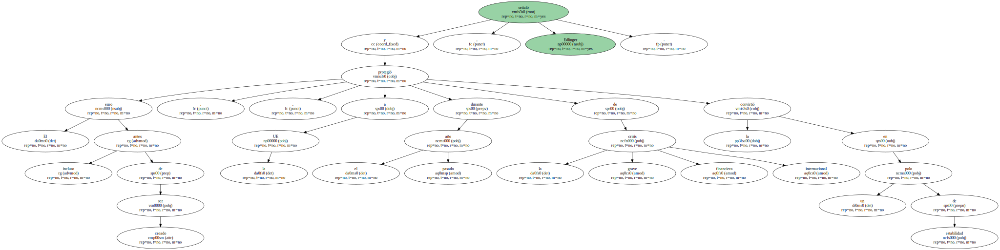Alemania recordó que ahora debe cumplirse el pacto de estabilidad y reclamó que se respete el compromiso de evitar la competencia desleal en la fiscalidad.
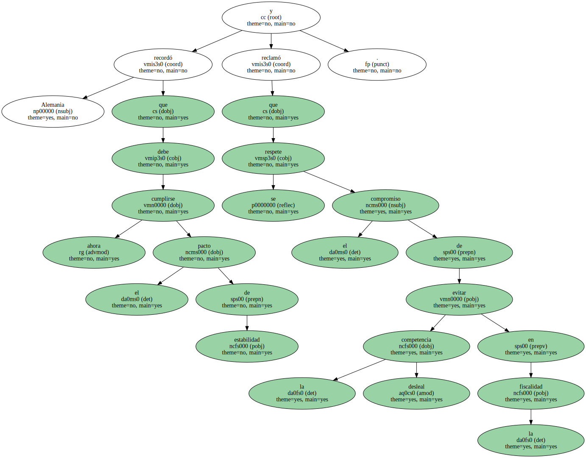Portugal aprovechó para defender la solidaridad y la cohesión dentro de la UE , amenazados por el plan de los países ricos de recortar las ayudas.
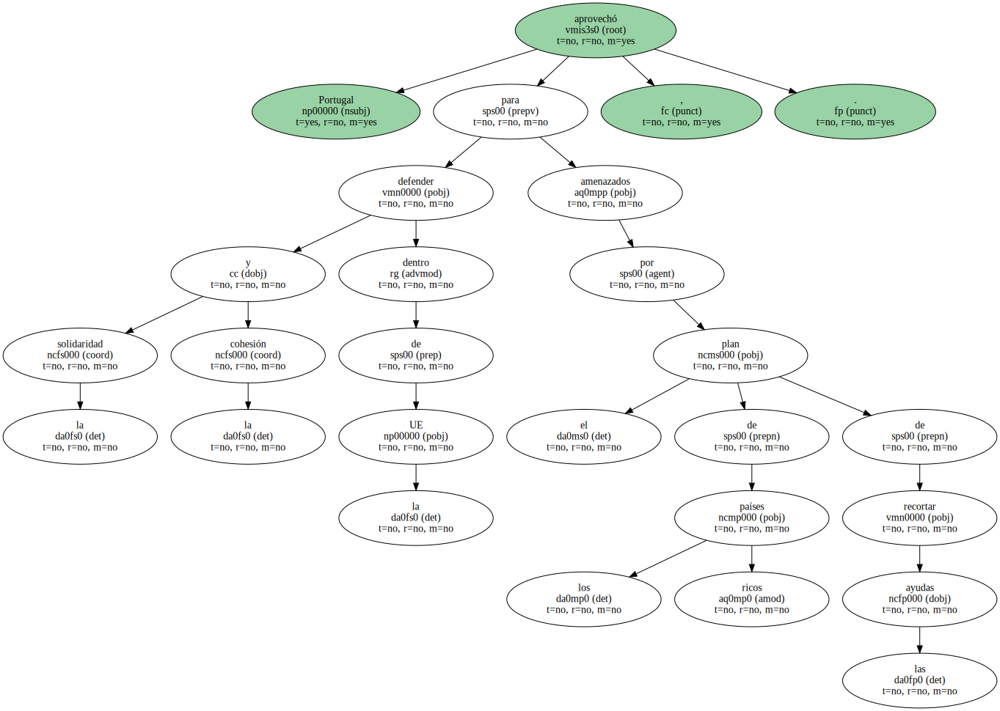" Un euro estable y fuerte necesita una UE fuerte " , afirmó el ministro portugués , António de Sousa.
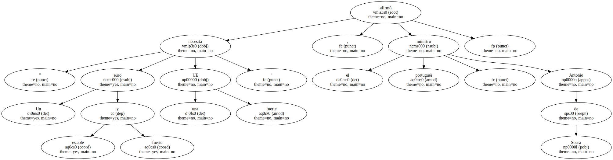La divisa única evidencia la disparidad de poder adquisitivo y renta entre países.
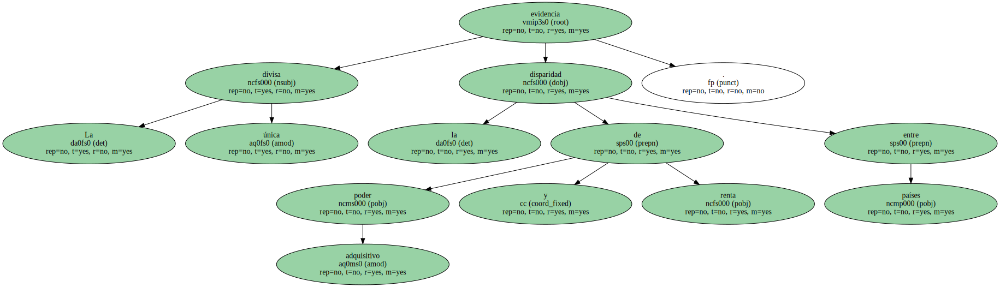Una única moneda con la que manejarse en un amplio espacio geográfico sin fronteras físicas es la mejor herramienta para la transparencia de precios.
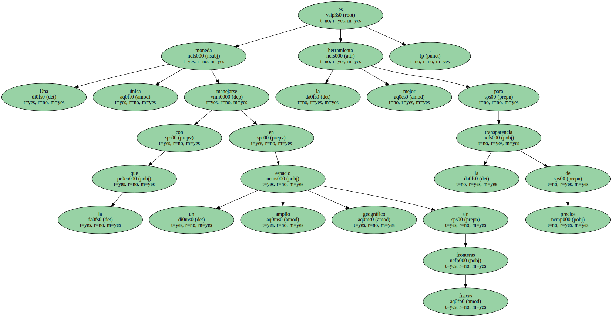No cuesta igual un mismo producto en Barcelona que en Murcia o en Pontevedra.
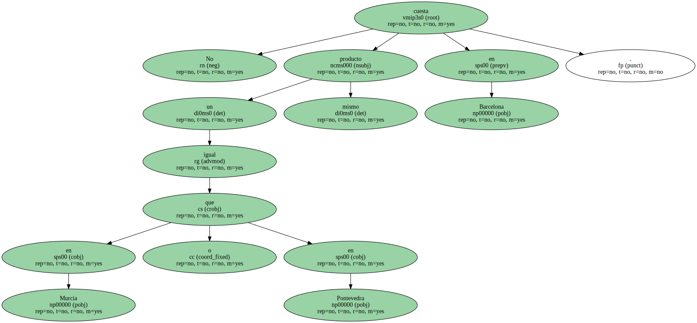Hay factores como la renta per cápita que pesan y que condicionan las políticas de precios.
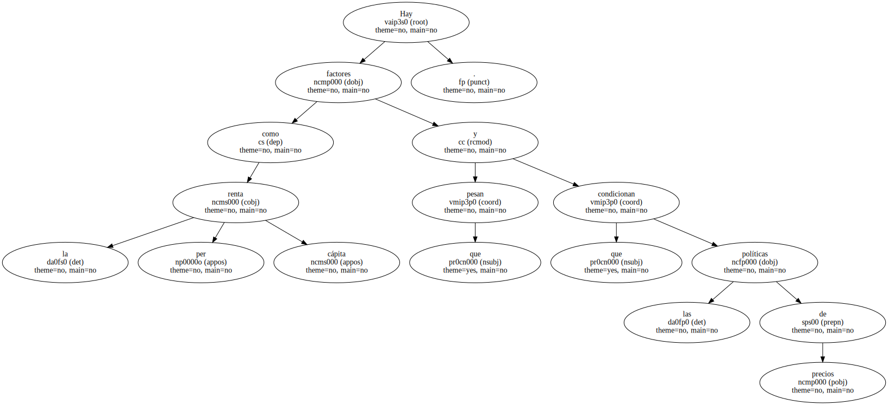Por ejemplo , la hamburguesa simple de McDonald's , que en Barcelona cuesta 170 pesetas 1,02 - - euros - - , en Berlín supera las 212 pesetas o 1,28 euros.
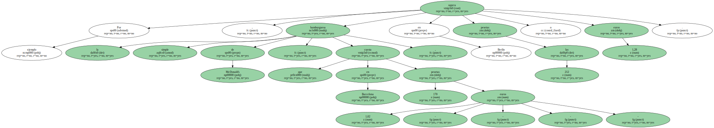En pesetas se ve la diferencia de forma bien transparente : en Berlín cuesta un 25% más hincarle el diente a uno de los productos más estandarizados que existen.
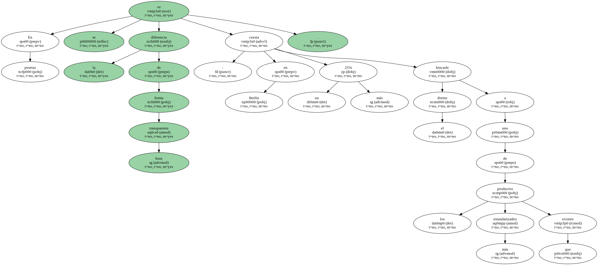En euros , parece que existen menos diferencias , pero hay que tener en cuenta que cada cent - - fracción en la que se divide el euro - - son 1,66 pesetas.
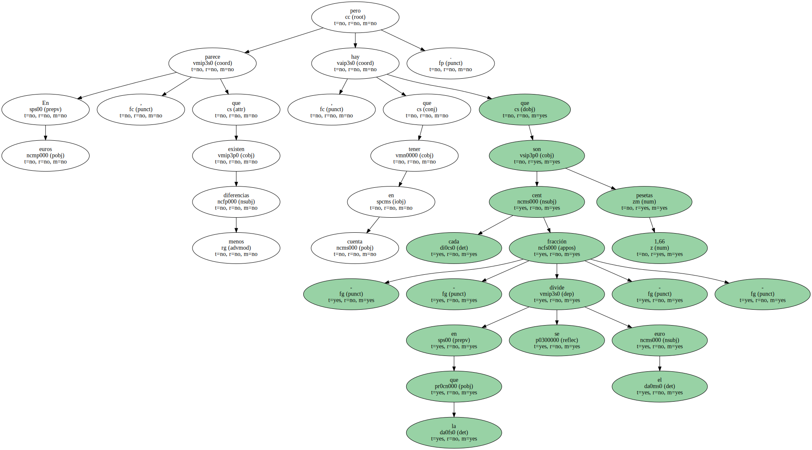Ello significa que los 26 cents de diferencia entre las dos hamburguesas ( la de Barcelona y la de Berlín ) , equivalen a más de 43 pesetas , es decir , el mismo 25% que si se hace la comparación en pesetas.
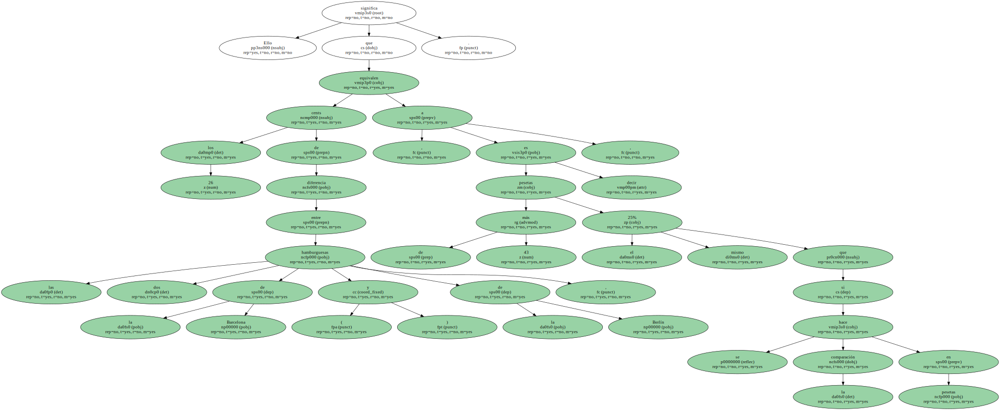Es cuestión de recuperar la memoria y recordar la etapa en la que era habitual en España contar céntimos y otras fracciones de la unidad de cuenta.
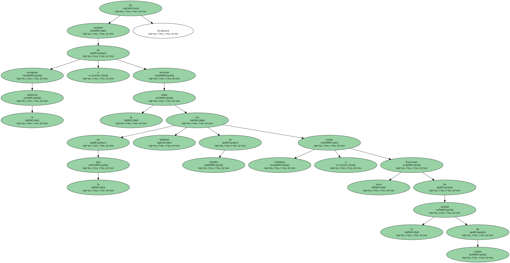Tal circunstancia deberán tenerla en cuenta las empresas de gran consumo en sus políticas de precios en Eurolandia.
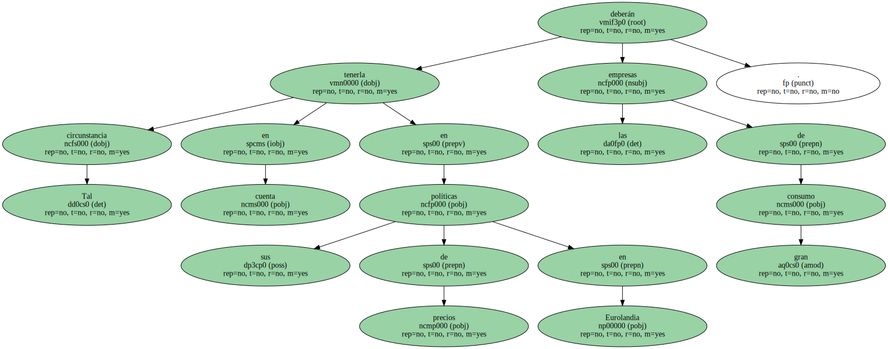No bastará con hacer la conversión.
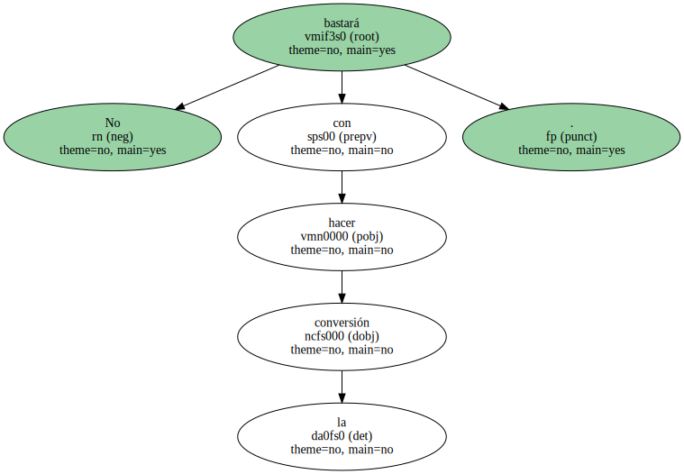El precio de un diario traducido a euros , 0,75 cents , resulta más operativo que 0,748 , aunque el redondeo excesivo también sea peligroso.
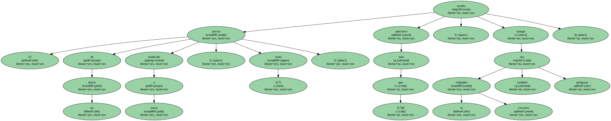Las circunstancias de cada país pesan.
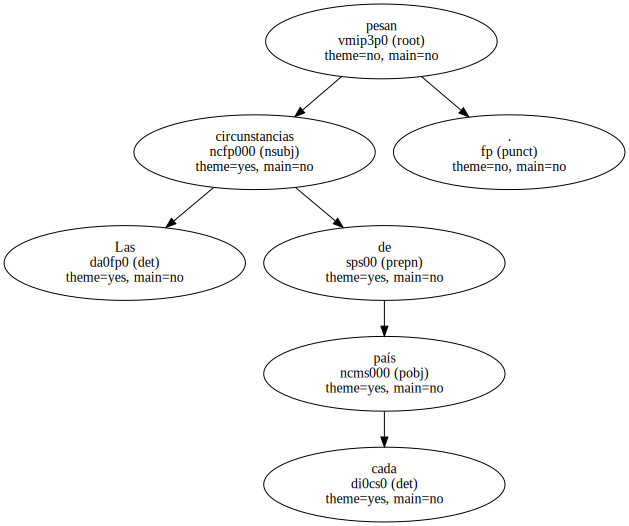Un español tiene alrededor del 60% de la renta de un alemán.

No es tan raro , por tanto que el berlinés pague más del doble que el barcelonés por un billete de metro , entre otros servicios y productos.
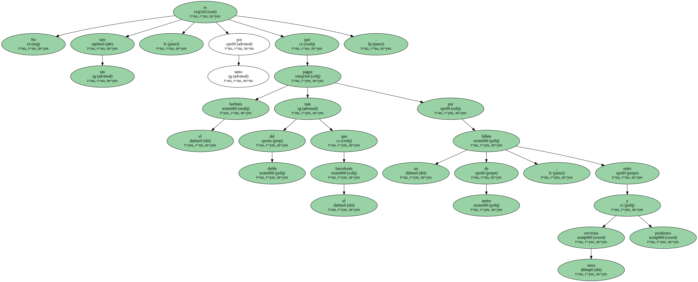Según el estudio realizado , con la ayuda de corresponsales del diario Eliseo Oliveras ( Bruselas ) , Montserrat Capdevila ( París ) y Gonzalo Cáceres ( Berlín ) , todos los productos son más baratos en España , con la excepción del modelo de Peugeot 306 más simple , que tiene el precio comparable en euros más bajo en Bruselas.

Alemania , por su parte , el país con más renta de los analizados , es más cara para todo , excepto para el paquete de Winston.
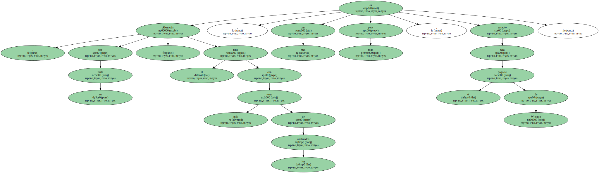Incluso la bajada de bandera del taxi , que oscila entre el equivalente a 2,05 y 3,07 euros , en función de la carrera , es la más cara de todas.
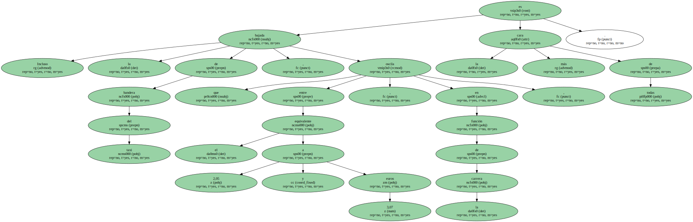Una de las servidumbres de vivir en la tercera potencia económica mundial , ahora integrada en la segunda , Eurolandia.
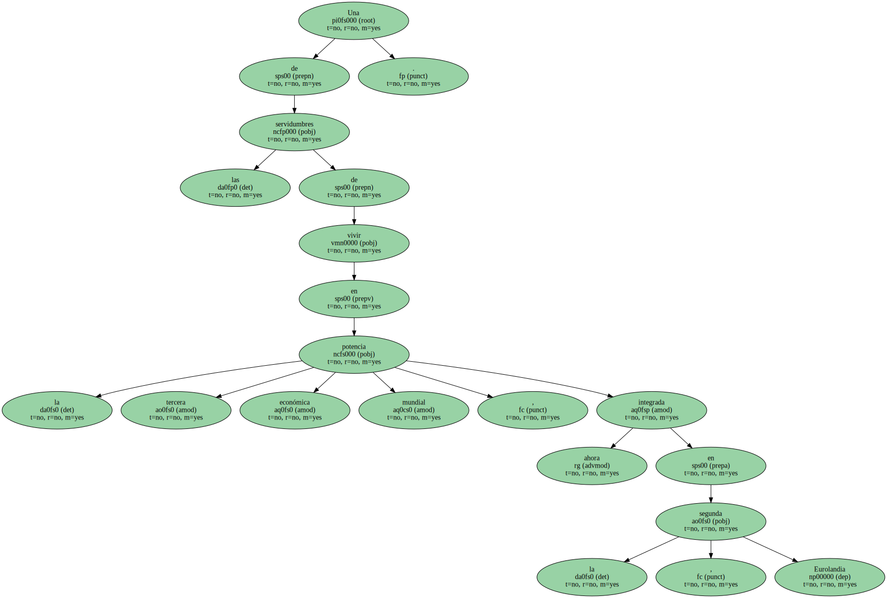